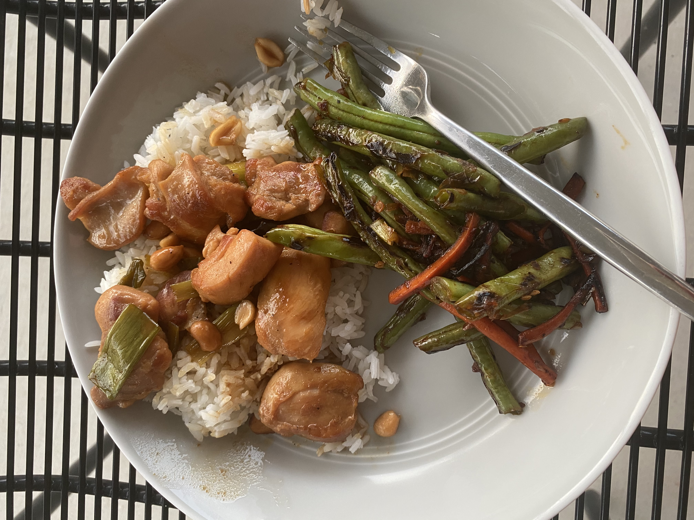
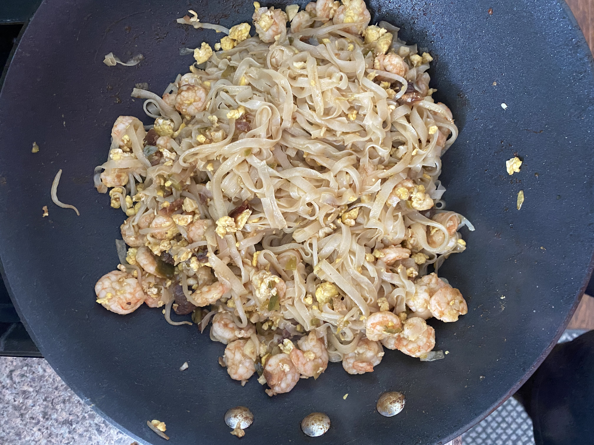
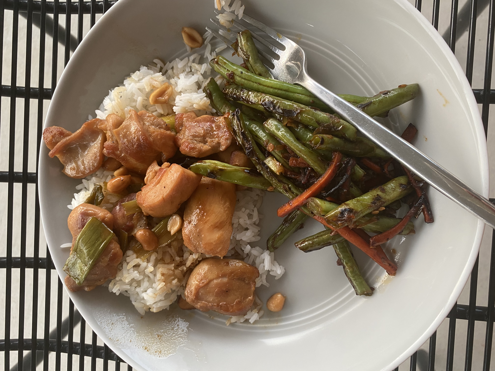
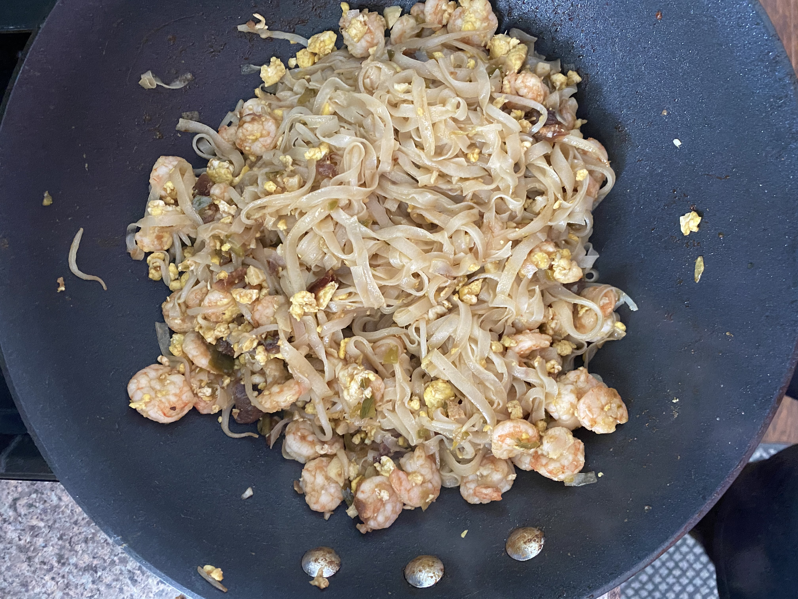

What Ryan's Cooking...

 




The Recipes
The Essentials
Onion and Garlic are always in our kitchen - they provide the founation for flavor in so many of our dishes.
Lemons and Limes not only can add great color with shaved lemon zest on your chicken or pasta - but the citrus can be an amazing counter of flavor for a spicy dish.

There is no item in the pantry I cherish more than carbs, they are delicous and a necessary diet staple. Rice/pasta can be the main dish or an essential side to an amazing meal.

Wine has been used for centuries to add flavor to French savory dishes or delicous risottos. It can also be a great companion while preparing your meal!

Fat=Flavor - It is that simple. The decision of how you'll use your fat and what fat you'll use is where it becomes fun, the first thing is that you should never be without it.

"Where would we be without salt" James Beard - Salt is responsible for the flavor and life of dishes, it should always be within an arms reach!